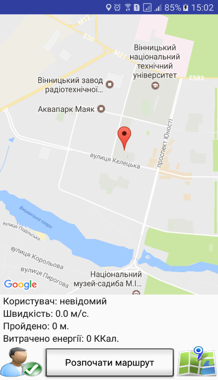
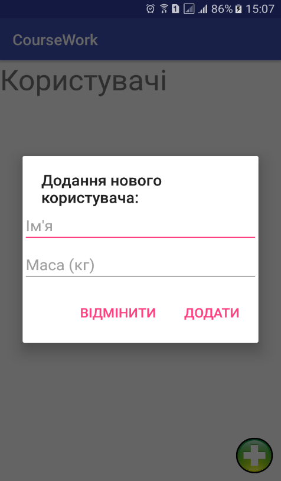
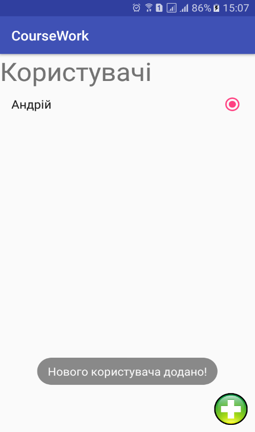
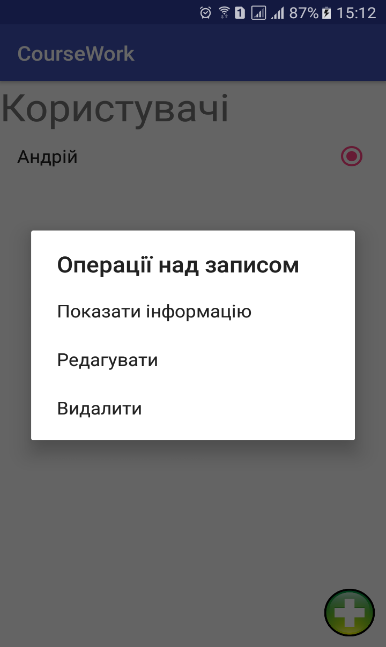
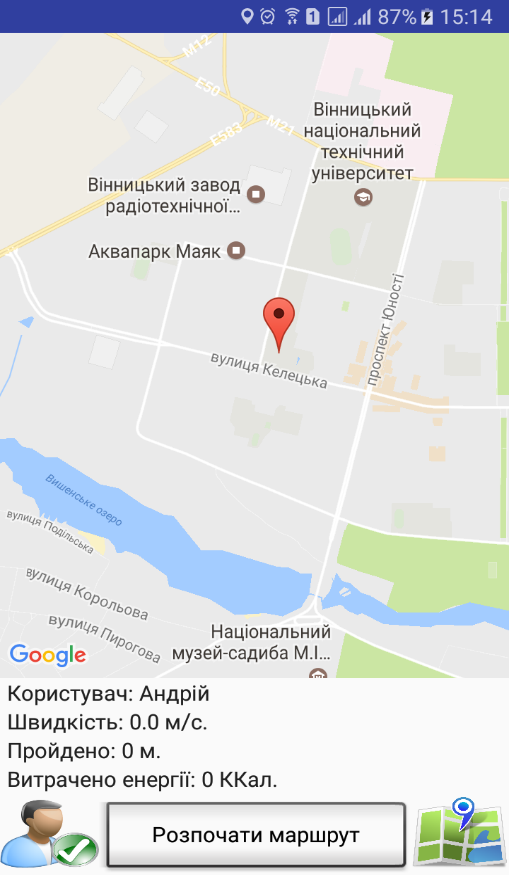
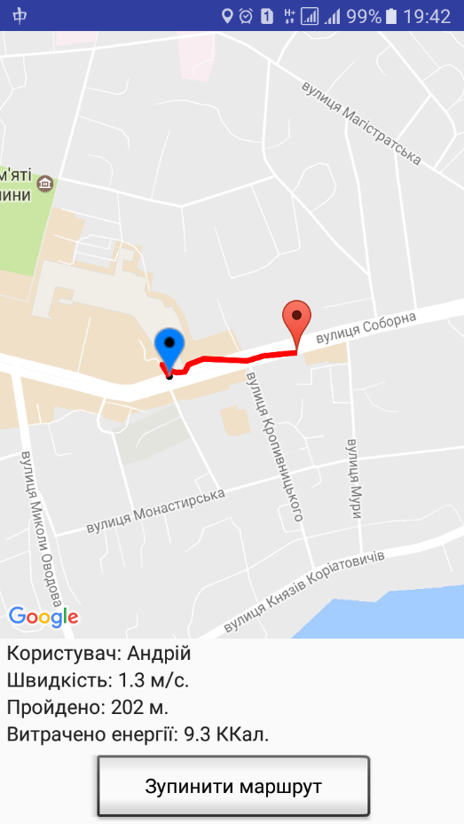
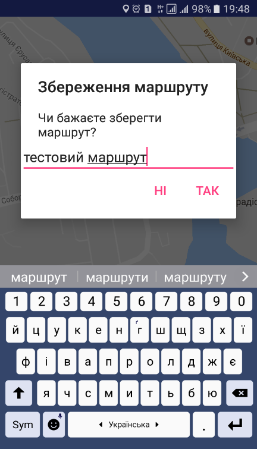
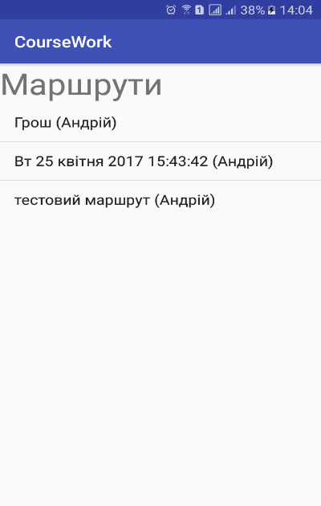
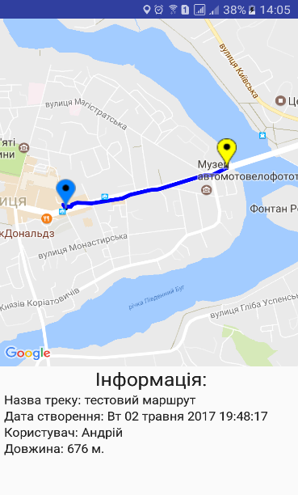
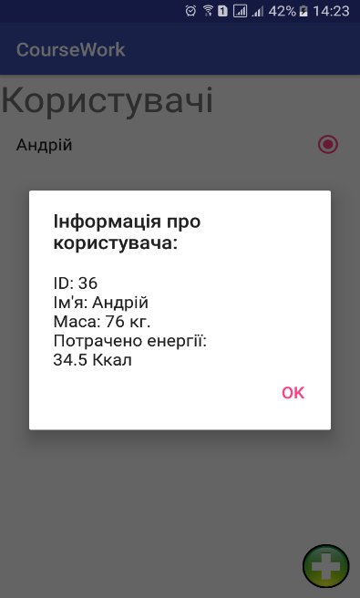

В даному документі описано приклад роботи із програмою підрахунку витраченої енергії з аналізом карт місцевості.
При першому запуску додатку (рис. 3.1) на панелі статусу в полі користувач виведене значення «невідомий». Це означає, що немає в БД мобільної системи ще жодного користувача.
Рисунок 3.1 — Інтерфейс мобільного додатку при першому запуску
Додамо користувача. Натиснемо на кнопку «Користувачі» (знаходиться в лівому нижньому куті екрану). З'являється вікно «Користувачі». Для того, щоб додати користувача, потрібно натиснути на кнопку «Додати» (кнопка у вигляді знаку «+», що знаходиться в нижньому правому куті екрану). На екран виводиться діалогове вікно «Додання нового користувача» (рис. 3.2). Введемо дані про користувача і натискаємо на кнопку «Додати». Після цього в списку користувачів з'явиться запис із новим користувачем і повідомлення, що нового користувача додано (рис. 3.3). Оскільки користувачів ще не було, то даний користувач одразу відмічається як активний.
Рисунок 3.2 — Діалогове вікно «Додання нового користувача»
Рисунок 3.3 — Вікно «Користувачі». Результат додання нового користувача
Із записом про користувача можна виконувати наступні операції, що наведені на рис. 3.4. Щоб викликати меню із цими операціями, потрібно довго натиснути на елемент в списку користувачів.
Рисунок 3.4 — Меню операцій, що можна здійснити над інформацією про користувачів
Повертаємося на головний екран додатку. Бачимо, що на панелі статусу в полі «Користувач» відображається ім'я активного користувача (рис. 3.5).
Рисунок 3.5 — Відображення активного користувача
Оскільки, GPS-координати користувача отримані, то натиснувши на кнопку «Розпочати маршрут», можна розпочати відлік маршруту. В іншому випадку, дана кнопка є недоступною. Розпочнемо відлік маршруту. Під час запису маршруту та обрахунку кількості потраченої енергії, інтерфейс додатку виглядає так, як показано на рис. 3.6:
Рисунок 3.6 — Відлік маршруту та розрахунок витраченої енергії
Потрібно звернути увагу, що при цьому кнопки «Користувачі» та «Маршрути» стають недоступними.
Щоб завершити відлік маршруту, потрібно натиснути на кнопку «Зупинити маршрут». Після цього додаток запитує, чи зберігати даний маршрут. Ввдемо назву маршруту «тестовий маршрут» та натиснемо на кнопку «Так» (рис. 3.7). Якщо поле з назвою залишити порожнім і натиснути кнопку «Так», то маршрут отримує назву, що відповідає його даті та часу створення.
Рисунок 3.7 — Збереження маршруту
Збережений маршрут можна переглянути в будь-який момент. Для цього отрібно на головному екрані натиснути на кнопку «Маршрути» (знаходиться в нижному правому кутку). Після цього відкривається вікно «Маршрути» (рис. 3.8), в якому відображається список із збереженими маршрутами.
Рисунок 3.8 — Вікно «Маршрути»
Аналогічно, як у вікні «Користувачі» з маршрутами можна виконувати певні операції. Меню даних операцій можна викликати при довгому натисненні на елемент списку.
Щоб вивести збережений маршрут на карту, потрібно викликати меню операцій та натиснути на кнопку «Показати на мапі...». Після цього на екрані з'явиться карта, на якій буде виведена траєкторія даного маршруту та коротка інформація про нього (рис. 3.9).
Також, якщо зайти у вікно «Користувачі» та вивести інформацію про користувача, який здійснив маршрут з назвою «тесовий маршрут», то можна побачити, що поле «Потрачено енергії» змінило своє значення (рис. 3.10).
Отже, дана мобільна система моніторингу обчислює кількісь витраченої енергії індивідуально для кожного користувача та зберігає пройдені маршрути, які можна переглядати на карті.
Рисунок 3.9 — Виведення збереженого маршруту
Рисунок 3.10 — Виведення інформації про користувача